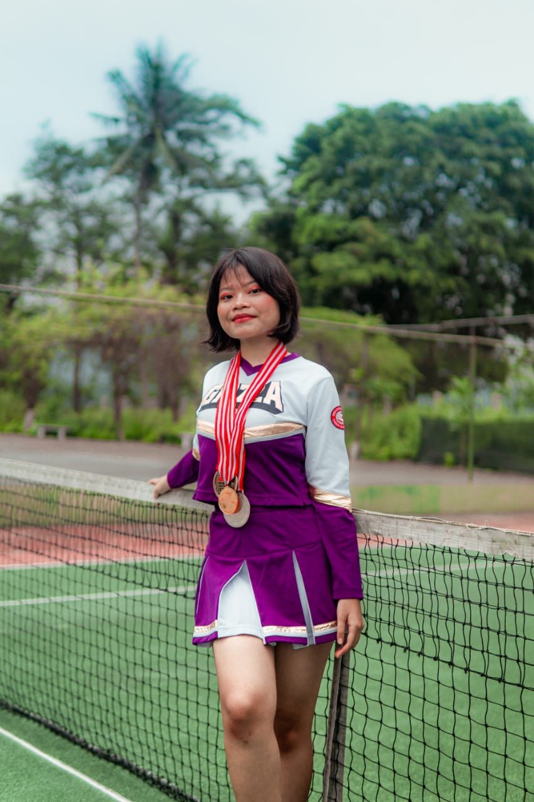
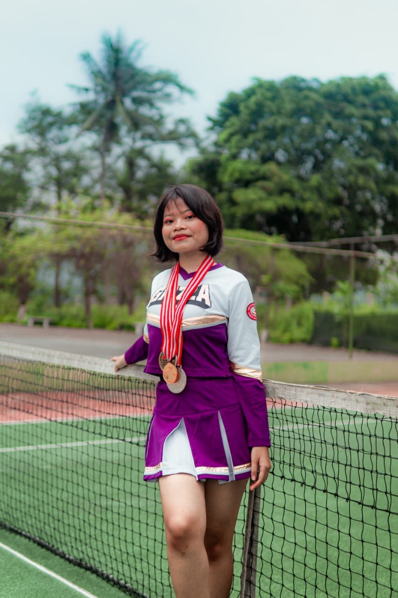

Amithea Cantik
This is a real stroy by jojo
Hai sayang , ini aku buat khusu buat kamu yaa
makasi banyak sudah hadir di dalam hidup jojo yang mungkn masih banyak berantakannya dan kamu mengurai diriku satu per satu itu membuatku lebih baik
makasi banyakbuat hal-hal positif yang amy ajarkan ke jojo , jojo sangat bangga sama kamu sayang , makasi banyak ya
Batu sekeras apapun itu jika di beri tetesan air dengan waktu yang konsisten maka ia akan tergerus juga itu ibaratkan jojo batu dan amy sebagai air
jojo bangga banget punya amy duh ini sampe ke berapa kali ya jojo bilang kalo sayang dan bangga banget punya amy :(

 
